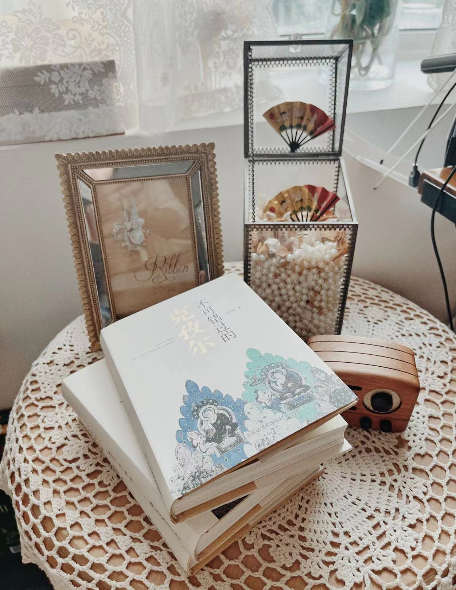
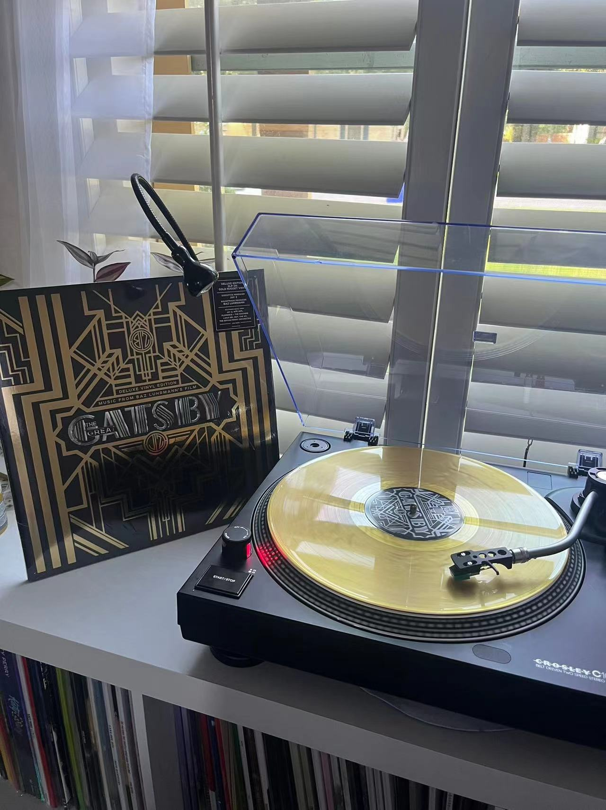
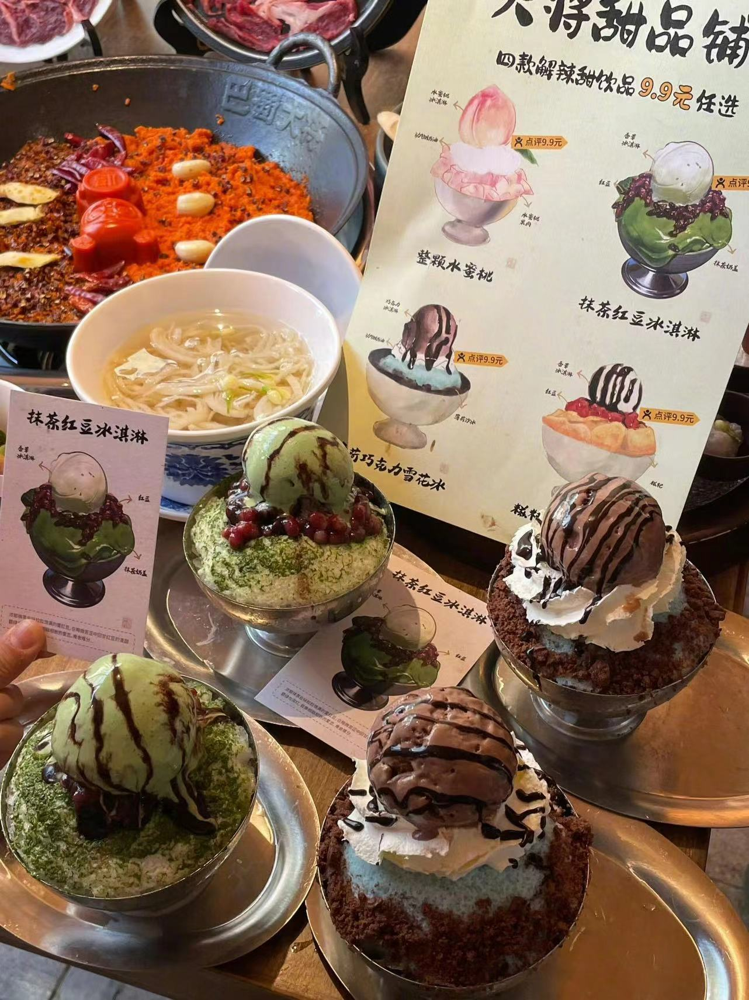
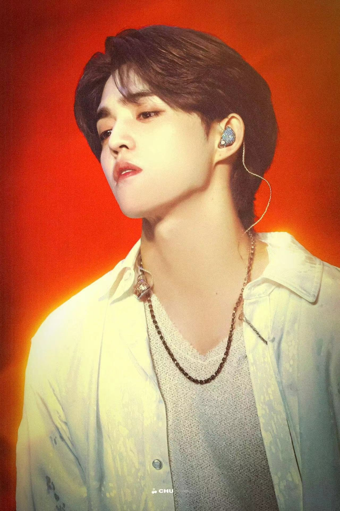
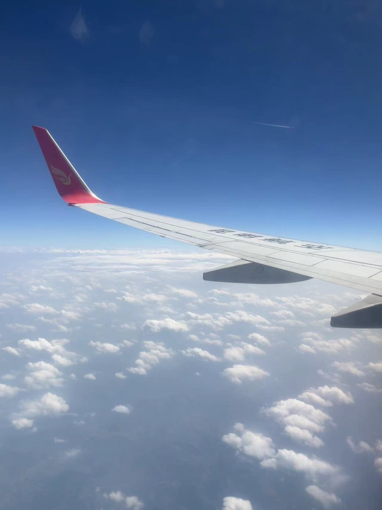

阅读

阅读，对我来说，是一种享受。我喜欢在闲暇时刻，沉浸在书的世界中，无论是翻开历史悠久的古籍，还是浏览现代流行的畅销书，我都乐在其中。每一本书都像是一个新的世界，等待我去探索。它们带给我无尽的知识和乐趣，让我在阅读的过程中，感受到世界的宽广和人生的多彩。书中的世界，有时候让我忘记了现实中的困扰和疲惫，让我感受到了生活的美好和希望。每一次翻开书页，都是一次新的冒险，每一次阅读，都是一次心灵的洗礼。
音乐

我对音乐没有统一的爱好，视心情和状态而定。既喜欢流行音乐，因为它具有强烈的现代流行音乐风格，内容通俗、形式活泼，令人心情愉悦；也喜欢民谣，民间流行的、赋予民族色彩的歌曲，内容丰富，表现一个民族的感情；也喜欢古典音乐，流传的经典，抒发情感；也喜欢轻音乐，令人舒缓轻松。
美食

对于我来说，美食不仅仅是为了满足口腹之欲，更是一种生活艺术和文化体验。我喜欢探索各种不同的食物，从街头小吃到高级餐厅的精致料理，每一道菜都蕴含着厨师的心血和创意。每当我品尝一道新的菜肴时，我都会仔细观察它的色泽、香气和口感，试图去感知它背后的故事和灵感来源。我也热衷于学习烹饪技巧，尝试在厨房里亲手制作那些令人垂涎的美食。无论是烘焙甜点、烹饪肉类，还是调制酱料，我都觉得非常有趣和满足。美食是我生活中不可或缺的一部分。它给我带来了无尽的快乐和满足，也让我更加珍惜和感恩生活中的每一刻。
追星

对于我来说，追星不仅仅是一种娱乐方式，更是一种情感寄托和精神追求。我喜欢深入了解我的偶像们的经历、才华和品质，他们的成功故事激励着我不断前进，追求自己的梦想。我关注他们的社交媒体动态，参与粉丝活动，甚至有机会亲临他们的演唱会或见面会，这些经历都让我感到无比兴奋和幸福。当然，我也明白追星需要理性对待。我只是作为一个普通的粉丝，默默支持他们，为他们加油打气。在我看来，追星也是一种社交方式。通过参与粉丝团体和与其他粉丝交流，我结识了许多志同道合的朋友，我们一起分享喜悦、讨论话题，形成了紧密的联系和友谊。
旅行

每当踏上一段新的旅程，我总是充满了期待和兴奋。我喜欢那种离开熟悉的环境，去探索未知世界的感觉。每一次旅行，都像是一次全新的冒险，让我有机会去体验不同的生活方式，感受不同的风土人情。我喜欢在旅游中看到那些壮丽的自然景色。无论是巍峨的高山，还是浩渺的大海，或者是迷人的星空，都让我感到震撼和敬畏。这些自然景观的美，让我感到自己的渺小，也让我更加珍惜生命和这个世界。